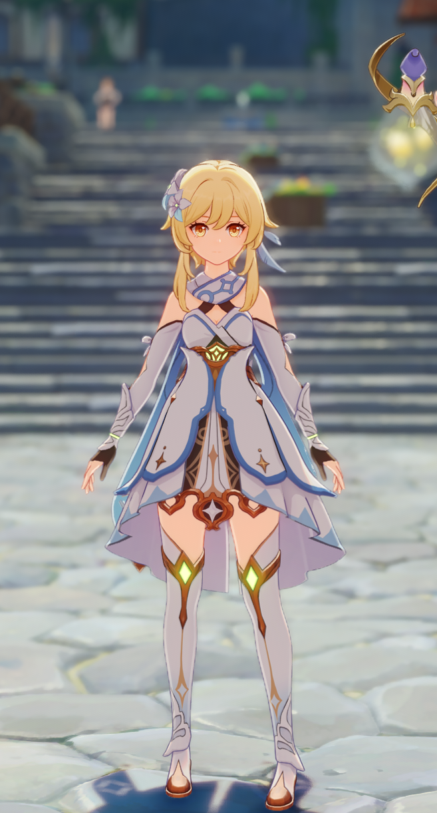
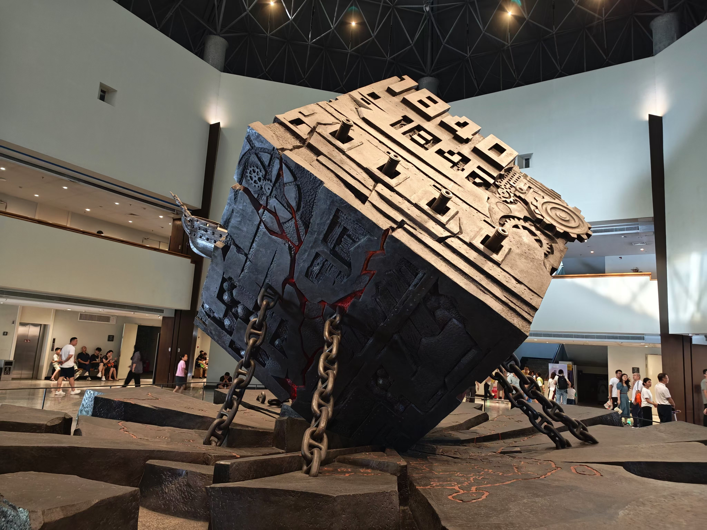
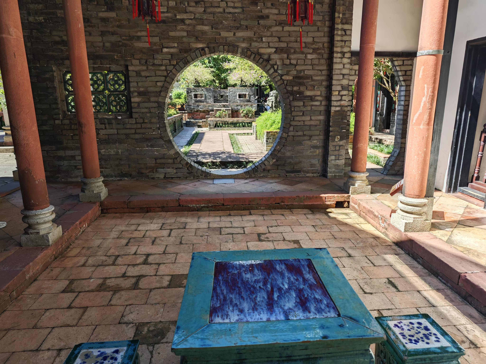
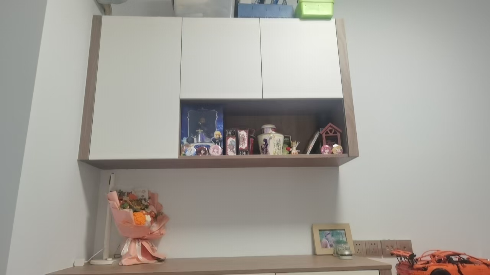
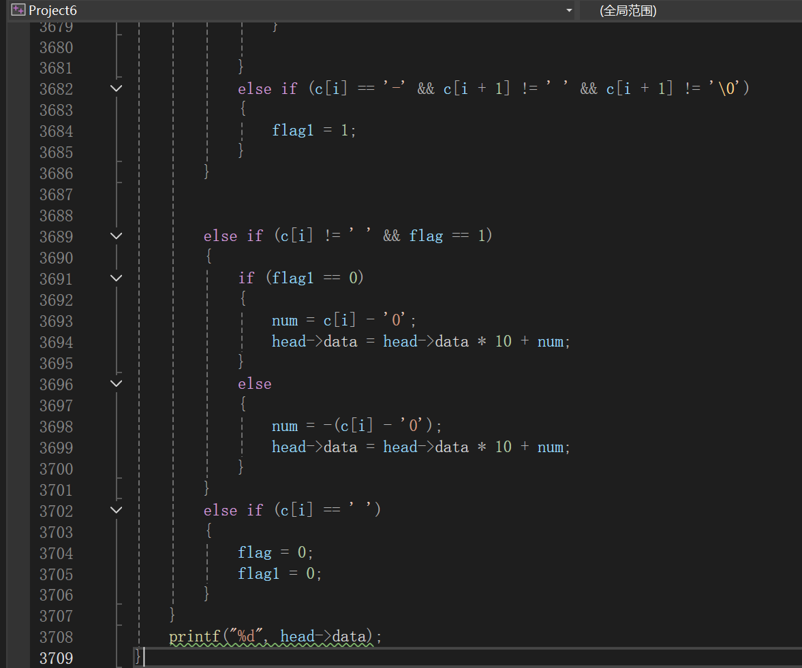

myself |
|
大家好啊，我是说的道理，今天给大家看一点想看的东西，我叫otto，来自哈姆国，高中毕业于花咲川，很高兴将与大家一同走过丰富（内卷）的大学四年。我喜欢二次元，同时也是一名游戏爱好者。篮球是我最喜欢的运动项目。作为一名计算机专业的学生，我对C语言也有一定心得，请在我的网页中了解我吧。 |
 and my life |
|
this is my favorate beef noodles |
and my dog! |
 my room（老二次元的柜子） |
| to learn more about me | ||
| my games | my amines | my coding(难视) |